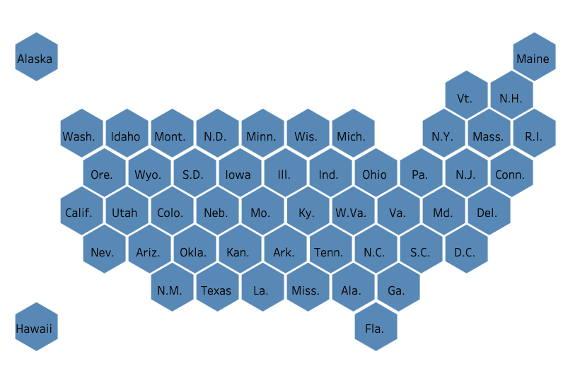
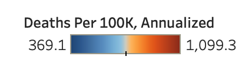
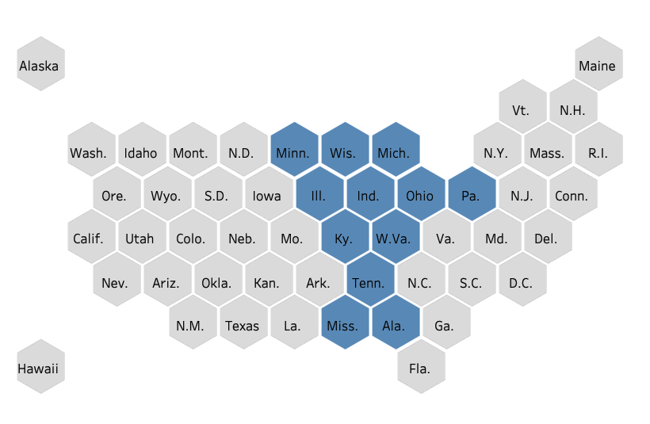
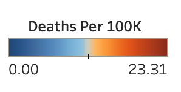
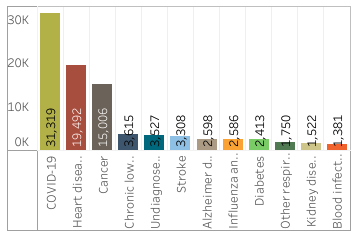

1
This heat map represents death rates across geographies that span multiple years.

2
The bands in red represent higher death rates, while the bands in blue
are lower.

3
Patterns emerge for regions with similar characteristics.
4
For example, examine the death rates as you move from the Midwest toward Appalachia and down to the Gulf.

5
By adding a filter to the heatmap we can better spot trends for causes of death across regions.
6
With the filter in place we can click on any of the Underlying Causes to get it's heatmap.
Clicking any empty area will clear the selection.
Want to try this yourself?
Scroll down to begin.
7
The chart to the right is live.
Try clicking around.
What trends can you spot? Do you know if deaths from Influenza are going up or down?
What regions have more deaths from Respiratory Disease? Heart Disease?
As you make selections notice the upper scale of the legend. A red area for Hypertension is not the same as a red area for Cancer.
8
Thanks for trying that out.
A high level view of deaths and their causes can provide insights into trends so we know where to focus resources and make policy decisions. But to know where to adopt policy we need to drill in a little further.
9
A weekly view of the data that focuses solely the top causes can help us accomplish that task a little better.
This heatmap is not only more granular, it contains more recent data. It displays death rates per week from 2014 until May of 2020.
10
Combined with a filter we can focus on specific Underlying Causes.
Only, we're using a toggle this time. You can select one, two, or all of them.
Oh, and there's one more thing.
11
You can drill in.
Click on a point, select-drag an area, or pick an individual state. The distribution of Underlying Causes will display for that selection.
The totals will match the table too if you select all regions.
Ready to try it out?
Scroll down to begin.
12
Go for it. It's live.
What patterns to you notice this time? What types of death have seasonality to them? Where do they occur?
13
Notice the legend when all causes but COVID-19 are toggled.

What happens to the legend when you add COVID-19 to the mix? What did you notice about the heatmap?
14
COVID-19 is an interesting case. It's average weekly deaths didn't start until end of February.
It's death count contribution also came from concentrated areas. See if you can reproduce the distribution below by finding where this occurred in the Mid-Atlantic. Can you find other hot spots?

15
The heatmap we've been using helps us quickly identify patterns across time and geographies. The image to the right relies on a similar approach, but renders the "heat" onto a tile map for a specific time frame. This particular time frame is between January 2020 to May 2020.
We'll stay in this time range and this map's heat so we can focus on recent events.
16
This should look familiar.
Select one or more causes of death and any number of states (up to 5) to see what that state's weekly death rate looks like on the line graph.
The death rate is in terms of
100K of population.
A second line projects the expected death rate based on seasonal averages.
Where do these lines diverge?
17
What other diseases, besides COVID-19, rise at the end of the line graph? As a reminder, an Underlying Cause of Death is the primary cause of death irrespective of the presense of COVID-19. Likewise, the COVID-19 deaths here are coded only as the primary cause.
With this knowledge, what conclusions can you draw about co-morbidities? Are there correlations between increased deaths from other categories with the rise of COVID-19?
18
We hope you enjoyed this data exploration on a somber topic.
Thank you for browsing, comparing, locating and discovering with us.
Sources
National Center for Health Statistics:
Underlying Cause of Death 1999-2018
Weekly Counts of Deaths by State and Select Causes, 2014-2018
Weekly Counts of Deaths by State and Select Causes, 2019-2020
Data visualization by
Kevin Hartman